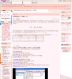

探索性因素分析的執行注意事項（Exploratory factor analysis）下~晨晰...
本篇延續上一篇，關於EFA的幾個重要的決策點：（3）要用直交轉軸或斜交轉軸（4）因素負荷量要多少才可以（5）怎麼樣的題項不能夠保留，以下就一一作說明：
（3）要用直交或斜交
所謂直交轉軸（Orthogonal rotation，又稱正交轉軸）指的是假設潛在因素之間的相關係數是0，因素軸之間的夾角為90度角，常見的有Varimax, Equamax等；相對的斜交轉軸（None-orthogonal rotation）就是假設潛在因素之間具有相關性，因素軸之間的夾角不為90度角，常見的有Promax, Oblimin等。
從數理統計的角度來說，「因素解」越簡單越好，而正交轉軸在數學上是比較簡單而且易於解釋的，因此在統計分析的角度是建議正交轉軸比較合適；但從研究的角度來說，一個量表所包含的次構面（sub-construct）之間應該是具有相關才合理，因此以研究意涵來看則是支持斜交轉軸。
因此到底要以正交或斜交何者呢，我個人是建議可參考先跑斜交轉軸，如此會得到潛在因素之間的相關係數矩陣，如陳正昌（2005, pp.213-214）所提到的，如果因素之間的相關係數普遍介於0.2至0.3之間則...
read more »

火狐「 Mozilla Firefox 4.0 」使用心得、軟體介紹及同步教學
軟體： Mozilla Firefox 版本：4.0 官網：http://moztw.org/firefox/ 前言： 這幾天在玩玩看firfox 4.0 發現真的不一樣喔～ 有那些不同的地方呢？ 如網頁所說明的 火狐有沒有跑那麼快 Firefox 現在比以前快六倍！我們強化了開啟程式、頁面載入、網頁應用程式及圖形硬體加速等效能，並且對於瀏覽豐富且高互動性的網頁進行了最佳化。 更能保護您的網路安全 除了原有的的反詐騙、反惡意程式、私密瀏覽模式變得更強，在 4.0 裡面還可以告訴網站不要追蹤你、對某些網站強制使用安全連線，並透過內容安全政策等功能，保護您的安全。 此外，我們開放原始碼的安全程序也讓全球資安專家隨時協助您緊盯漏洞，讓你更感安心。 沒有一個瀏覽器能適合所有人 我們清楚，你跟別人用網路的方式就是有點不同，也當然沒必要要求你跟鄰居用一模一樣的瀏覽器。無論你是要尋找新功能，或是讓 Firefox 更漂亮，超過二十萬套的附加元件，協助您依最適合自己的方式調整瀏覽器，完成任務。 全新的簡潔介面 您使用 Firefox 4 時首先會注意到的就是全新的簡潔介面。原有的一些功能已經被整合、簡化，或是搬...
read more »